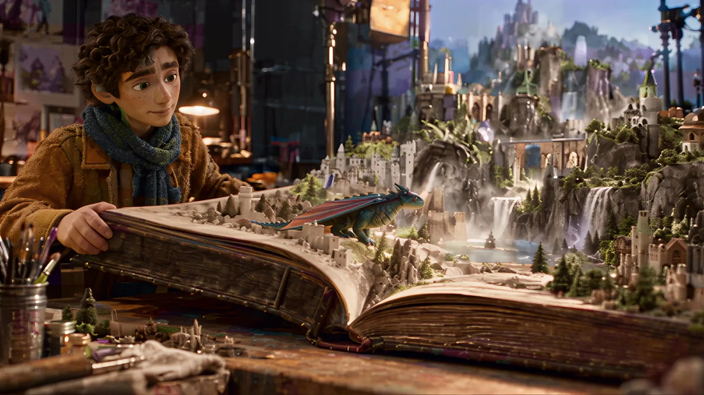
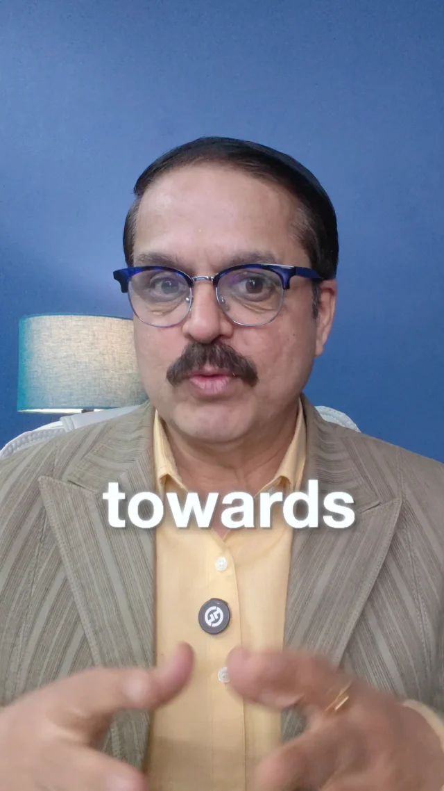

Video editing tutorial
MOUSAM CHATTERJEE / CREATIVE PORTFOLIO
Original sound starts automatically where your browser permits. If blocked, use Enable sound. Sound pauses when you stop scrolling or leave the film. Press Escape to mute.

Press play to watch the original film.
Original creative portfolio film: animation, pacing and visual direction. Not a SaaS client case study.
See the original portfolio Topic research Scripts & hooks Video production Thumbnails & titles YouTube publishing
B2B SAAS / YOUTUBE CONTENT STUDIO
Research to publishing.YouTube content.
Built around
you.
Your knowledge is the starting point. We turn it into videos your buyers can learn from.
We research the topics, write the scripts, handle production and publish the videos. You bring your expertise, product context and final approval.
01 Research02 Script03 Produce04 Publish
01 / Selected work
Made for
the screen.
Real educational content from Finest Edit Academy. A look at our editing, storytelling and thumbnail craft.
Original educational work—not SaaS client results. Thumbnails from the channel archive. View the full YouTube portfolio
02 / Previous agency work
Real channels.
Real experience.
Selected audience outcomes from Finest Edit’s work with education, coaching and creator channels.
01Creator channel
 View original card (opens in a new tab)
View original card (opens in a new tab)Hungry Fam
Original case card02Education & coaching
 View original card (opens in a new tab)
View original card (opens in a new tab)Emma Ding
Original case card03English-language education
 View original card (opens in a new tab)
View original card (opens in a new tab)Vinit Kapoor
Original case cardHistorical, agency-reported outcomes. Not independently audited, not SaaS pipeline results and not a forecast. Original agency source
In their own words
The work matters.
So does the experience.
What previous agency clients say about delivery and content strategy.

Gautam Sharma
Creative Director
Gerbil Films
“They were always on time, never delayed any project, happy to be their customer.”Read the original testimonial ↗

0:36Watch Vinit Kapoor’s original testimonial (opens in a new tab)Vinit Kapoor
English-language educator
On clearer content strategy, branding and more structured execution.
Watch the original testimonial ↗03 / The process
From idea
to upload.
One connected workflow. We handle the production, with your expertise and review built in.
Stage 01
Research & direction
We get to know your product, audience and point of view. Then we research the questions, objections and use cases your videos should address.
What you get: A focused topic plan and clear angles for your channel.
Stage 02
Scripts & production
We turn your expertise into hooks, scripts and visual stories. Then we handle production, editing, motion graphics and thumbnails, with your review at the agreed stages.
What you get: Buyer-focused videos that explain, demonstrate and teach.
Stage 03
Publishing & review
We prepare titles, descriptions and uploads, then review what viewers respond to. Those learnings help shape the next topics.
What you get: A published content library and an informed next step.
04 / Our capabilities
Your production team.
Without building one.
The thinking, craft and execution behind every video, brought together in one place.
Topic research
Customer questions, category research and your product expertise shape what we make.
Scripts & hooks
Clear openings, useful examples and a structure that makes complex ideas easier to follow.
Video production
Editing, screen recordings, supporting visuals and motion graphics that serve the story.
Thumbnails & titles
Packaging that clearly communicates the topic and gives the right viewer a reason to watch.
Channel publishing
Descriptions, video details and uploads handled as part of the agreed content workflow.
Performance review
We look at the response to your content and use those learnings to inform the next videos.
Formats, volume, founder input, review rounds, timing and pricing are agreed before work begins.
A good fit
For founders
ready to teach.
Not content for the sake of posting. Useful videos for the people your product is built to help.
This works well when
- You know your product and best-fit buyers.
- You have useful insights, examples and a point of view.
- You want a partner to handle research through publishing.
A clear expectation
We build useful content—not guaranteed views, leads or sales. Your expertise and approvals remain part of the process.
Mousam ChatterjeeFinest Clients / Finest Edit
The person behind the work
You know the product.
Let’s make it
worth watching.
You shouldn’t have to become a full-time creator to explain what your SaaS does well. This offer brings research, scripting, production and publishing together—around your expertise and the people you want to reach.
Explore my full portfolio05 / A few answers
Before
we roll.
A clear scope. A shared direction.
No surprises about who does what.
Do I have to write or edit the videos?
No. Research, scripting, production and publishing are the core offer. We agree the formats, supporting visuals, thumbnails and delivery scope in writing before work begins.
How much time do I need to give this?
You provide product context, your expertise and approvals. We agree the interview or recording approach and review process before starting, so your role is clear.
Do I need an existing YouTube channel?
No. We can discuss starting a channel or improving an existing one. The useful starting point is a clear buyer, a clear product and something worth explaining.
Do I have to be on camera?
Not necessarily. Founder-led video, screen recordings, product demonstrations and supporting visuals can all play a role. We choose the format together. Any AI-generated likeness or voice needs your explicit approval.
What does it cost, and how many videos do I get?
We agree the video volume, formats, turnaround, review rounds and price in a written scope before any work starts. The first conversation is about what your SaaS and audience need.
Do you guarantee views, leads or revenue?
No. We create relevant, credible content for your buyers. Outcomes depend on your audience, market, product and many other factors. The historical agency examples above are context, not a promise for your SaaS.
YOUR NEXT CHAPTER
Let’s make something worth watching.Your expertise.
Next on YouTube.
Tell us what your SaaS does, who buys it and what you want your videos to explain. We’ll work out the right content direction.
Let’s talk YouTube Opens your email app. Tell us about your product and channel.mousamchatterjee10@gmail.com